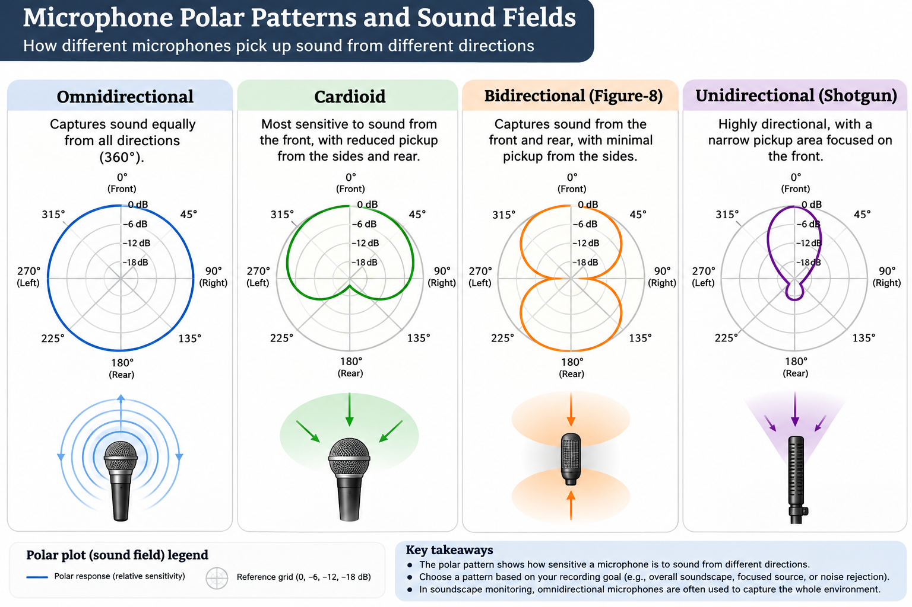

Planning and collecting high-quality environmental audio for soundscape analysis
Soundscape research depends on recordings that represent the acoustic environment as consistently and accurately as possible. The quality of later analysis—whether based on listening, acoustic indices or machine-learning models—depends strongly on how audio is collected. Recording decisions influence which sounds are captured, how clearly they are represented and whether recordings can be compared across locations and time.
As mentioned in the earlier moduled, an environmental soundscape may contain three broad components. Biophony refers to sounds produced by living organisms, such as birds, insects, amphibians and mammals. Geophony refers to non-biological natural sounds, such as wind, rain, flowing water and thunder. Anthrophony refers to sounds associated with human activity, including road traffic, machinery, construction, aircraft and human voices. These components often overlap. A recording protocol should aim to capture the acoustic environment relevant to the research question rather than selectively recording only the most noticeable source.
The microphone converts acoustic pressure variations into an electrical signal. Its characteristics affect the frequency range, sensitivity and direction from which sounds are captured. Important specifications include:
Common polar patterns include omnidirectional microphones, which respond broadly to sound from all directions; cardioid microphones, which are more sensitive to sound from the front; bidirectional microphones, which capture sound from the front and rear; and shotgun microphones, which are designed for more directional recording. The best choice depends on whether the study aims to represent the surrounding sound field or focus on a particular direction or source. As each type of microphone has specific recording field and pattern, it is important to understand the types. Figure 4.1 shows the pattern and direction of sound capture of each type of microphone.

Placement can change the recorded balance of sound sources even when the same equipment and settings are used. Record the microphone height, orientation and position relative to nearby objects. Avoid placing it too close to large reflective surfaces, walls or structures unless that is part of the study design. Such surfaces can reflect sound and alter the recording through reverberation and interference.
Consider nearby roads, buildings, water bodies, vegetation and human activity. Avoid accidental obstruction by branches or equipment. Wind can create strong low-frequency noise at the microphone; a suitable windscreen can reduce this effect, although it cannot eliminate all wind-related noise. For comparisons across sites or dates, keep placement as consistent as practical and document any unavoidable differences.
Sampling rate and bit depth determine how the analogue microphone signal is represented digitally. As discussed in Chapter 3, the sampling rate determines the temporal sampling resolution and the highest frequency that can theoretically be represented, while bit depth determines amplitude quantisation. Select settings according to the frequency range of interest, the microphone and recorder capabilities, storage limits and downstream analysis requirements.
For research recordings, WAV is commonly preferred because it can store uncompressed audio and avoids the information loss associated with lossy compression. MP3 can reduce storage requirements, but compression may alter details that matter for acoustic analysis or automated detection. Record the actual sampling rate, bit depth, channel count and file format in the metadata. Mono recording may be sufficient for some analyses; stereo can preserve spatial differences and may be useful when the research question concerns the spatial character of a soundscape.
A project can use continuous recording or scheduled/periodic recording. Continuous recording captures the soundscape throughout the selected period and can reveal short or unexpected events, but it requires more storage, power and data-management effort. Scheduled recording captures selected intervals—for example, a fixed number of minutes every hour or at particular times of day. It can reduce storage and power requirements, but may miss events outside the selected windows.
The schedule should reflect the research question. Bird activity may vary across dawn, daytime and dusk; insects may be more active at particular temperatures or times; rain and traffic may vary throughout the day. Sampling only at one time can therefore produce a biased representation. Document the schedule and apply it consistently when comparing sites. However, during our own work, we have noticed that continupus recordings in high definition need to be dealt carefully. Continuous recordings may result in large file sizes which are time-consuming to transfer for analysis and for visualization. Hence, in the current work, we have captured uninterrupted recordings in chunks of 10 seconds, so that they can be transferred to for analysis in a short time.
Field conditions influence both the soundscape and the recording equipment. Wind can cause microphone turbulence; rain can strike the microphone or enclosure; humidity and temperature can affect equipment performance; and nearby human activity can introduce unwanted handling or deployment noise. Enclosures and windscreens should protect the equipment without unnecessarily blocking or colouring the sound. Consider security, animal interference, water ingress, cable movement, power supply and safe access for maintenance. Record unusual weather or deployment conditions because they may help explain differences in the data.
Audio without reliable metadata is difficult to interpret, compare or reproduce. Each recording should have a unique identifier and a corresponding metadata record. Useful fields include:
Use a consistent naming convention that supports sorting and identification. For example:
SITE01_20261122_053000.wav
SITE01_20261122_060000.wav
SITE02_20261122_053000.wavHere, the filename encodes the site, date and local recording start time. The metadata should clarify the convention and the time zone. Do not rely on filenames alone: maintain a CSV or spreadsheet with the full metadata.
Quality control should be performed soon after recording and before large-scale analysis. Listen to a sample and inspect the waveform and spectrogram. Check for:
A practical quality-control workflow is to verify that the file opens, check duration and audio properties, inspect the waveform for clipping or gaps, listen to representative sections, inspect the spectrogram for unusual patterns, and compare the file against the recording log. Keep a record of excluded or problematic files and the reason for exclusion.
Scenario: You are planning to monitor the soundscape of a forest site for one week. Design a protocol that another researcher could follow and reproduce.
| Field | Example | Why it matters |
|---|---|---|
| Recording ID | SITE01_20261122_053000 | Unique reference for the audio file |
| Site ID | SITE01 | Links recordings from the same location |
| Date and local start time | 2026-11-22, 05:30 | Supports temporal analysis |
| Duration | 10 minutes | Confirms the planned recording interval |
| Audio settings | 48 kHz, 24-bit, stereo WAV | Documents digital recording parameters |
| Equipment | Recorder and microphone model | Supports reproducibility |
| Placement | 2 m height, fixed orientation | Supports comparison across recordings |
| Weather/notes | Light wind, no rain | Provides context for acoustic variation |
Reliable field recordings are the foundation for every later stage of soundscape analysis. Recording settings, placement and metadata influence the comparability of acoustic indices and the performance of automated classifiers. For example, changes in microphone response or recording gain may affect the apparent energy of soundscape components, while wind noise may obscure quiet bird vocalisations or be classified as another sound event.
In a reproducible workflow, preserve the original audio files, maintain a clear metadata table, document quality-control decisions and keep processing outputs separate from the raw recordings. Consistent local timestamps and filenames are particularly important when aligning recordings with field observations and later analysis.